REAL-TIME | VFX DEVELOPMENT
VFX
Real-time visual effects created in VFX Graph with customizable parameters and interactive collisions.
01
Magical Orb
VFX | SPHERE
VFX GRAPH
+
Magical sphere with a lot of confined particles
Visual effect created with the objective of simulate the magical creation of buildings in the game, morphing to a SDF representation of the building mesh.
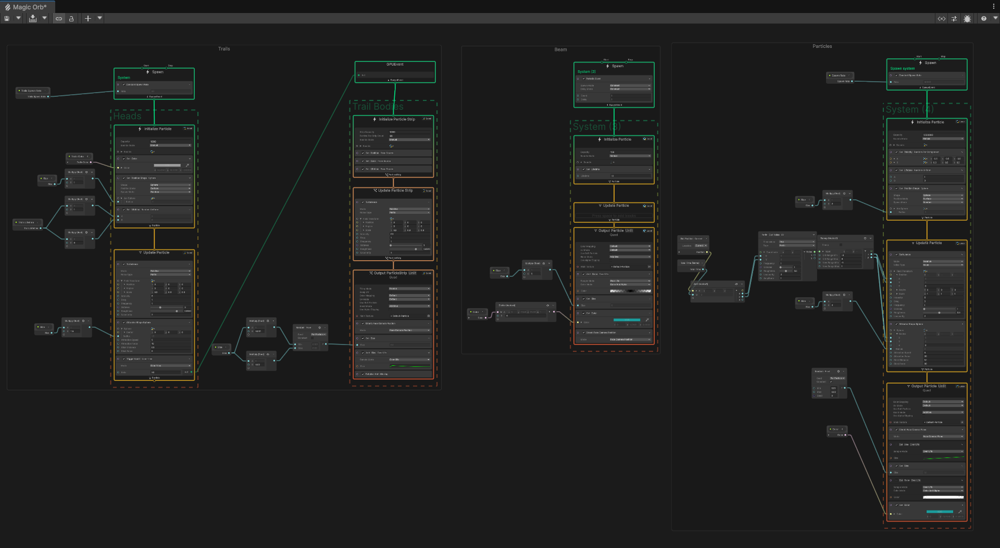
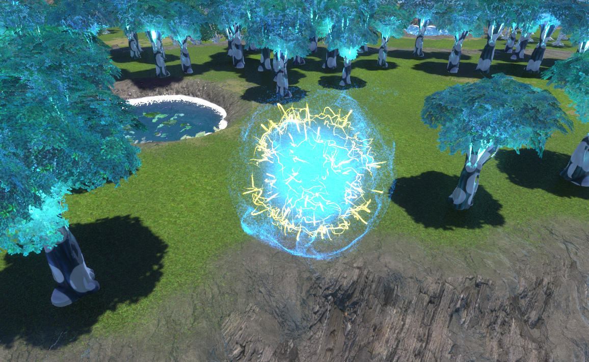
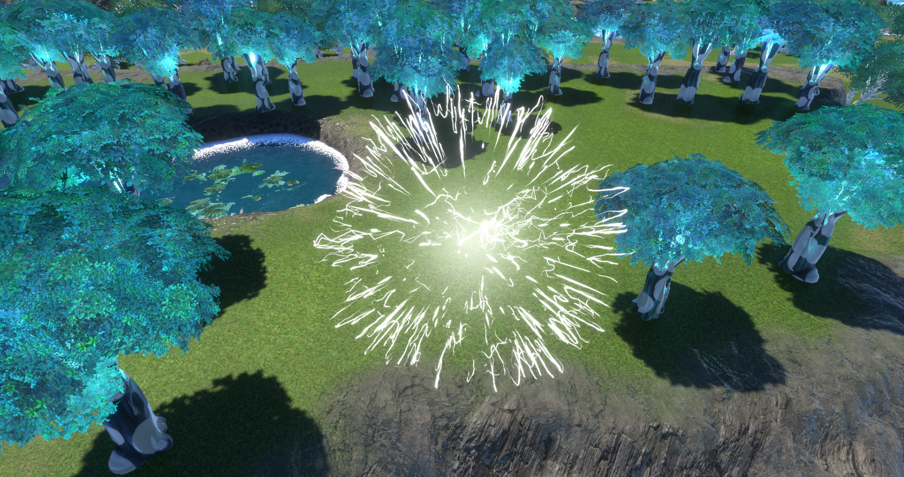
TECHNICAL BREAKDOWN
- Multiple variations that can result in a different VFX depending on parameters.
- Customizable amonunt of particles and lifetime.
EXPOSED PARAMETERS
02
Plasma Sphere
VFX | SHADER
VFX GRAPH
+
Plasma Sphere
Sphere compound by a visual effect and a material with a custom shader
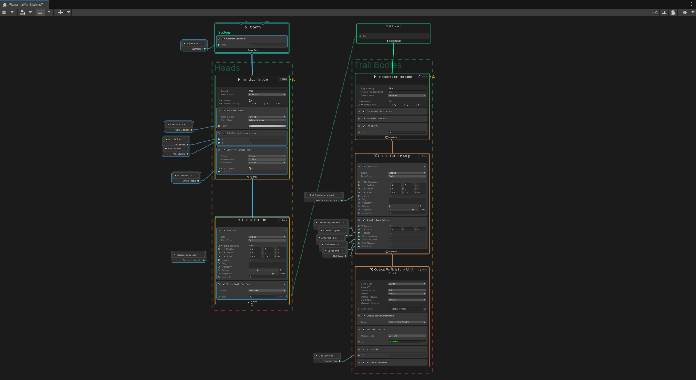
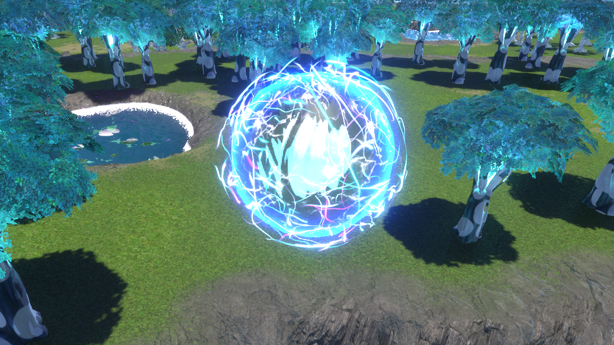
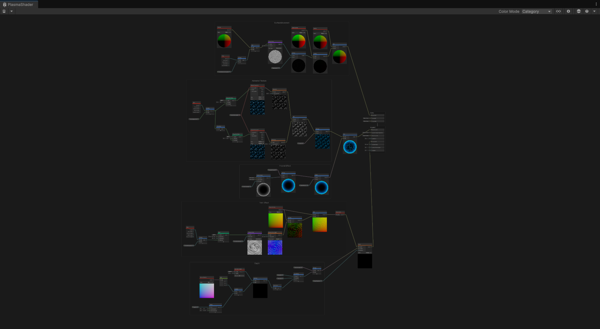
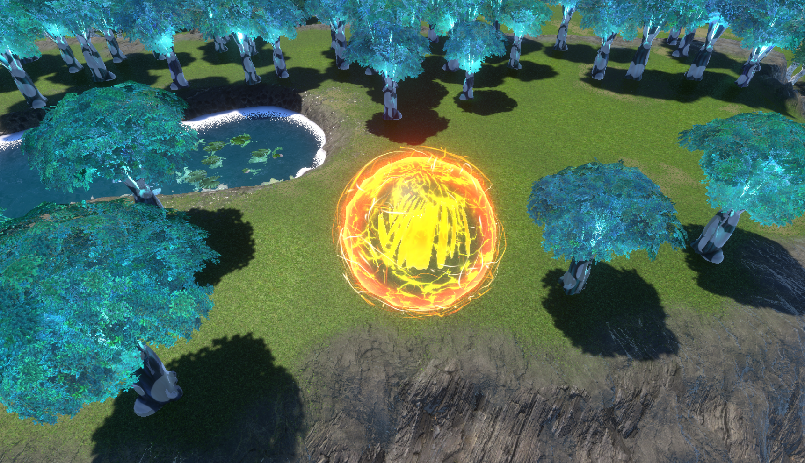
TECHNICAL BREAKDOWN
- Multiple variations combining the refractive shader and the VFX.
EXPOSED PARAMETERS
03
Plexus Effect
VFX
VFX GRAPH
+
Sci-Fi Tech Effect
Visual effect that shows a technical graph style buff.
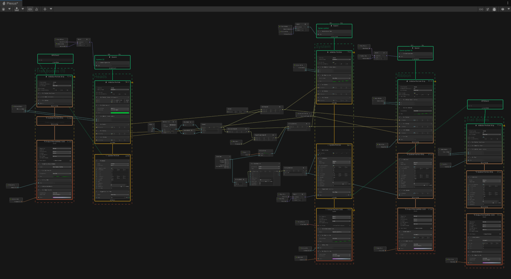
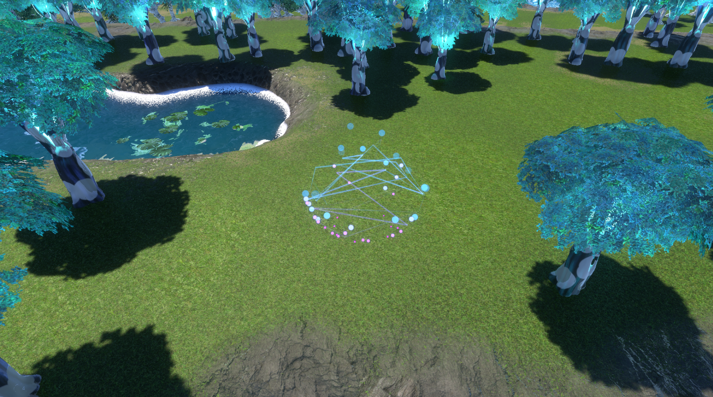
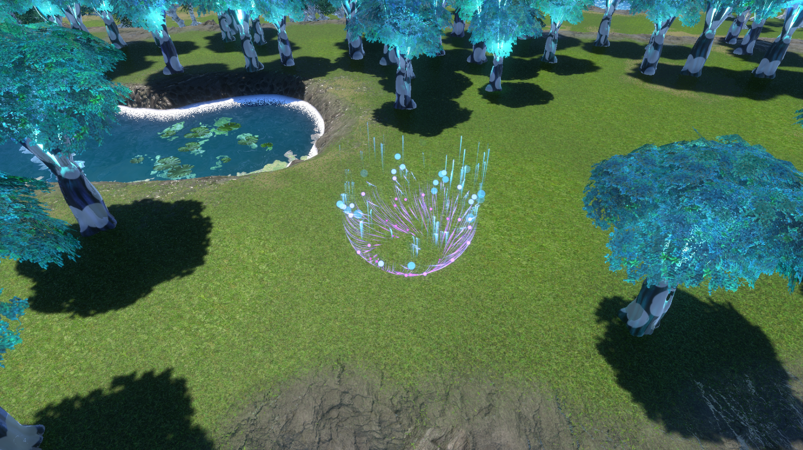
TECHNICAL BREAKDOWN
- Customizable points texture.
- It includes separate points, ribbons and trails to be combined.
- Independent colors, size, lifetime and rate for each component.
EXPOSED PARAMETERS
04
Bubbles
VFX | ANIMATED
VFX GRAPH
+
Bubbles & Fireflies
Floating particles ideal for fireflies, bubbles or magical effects.
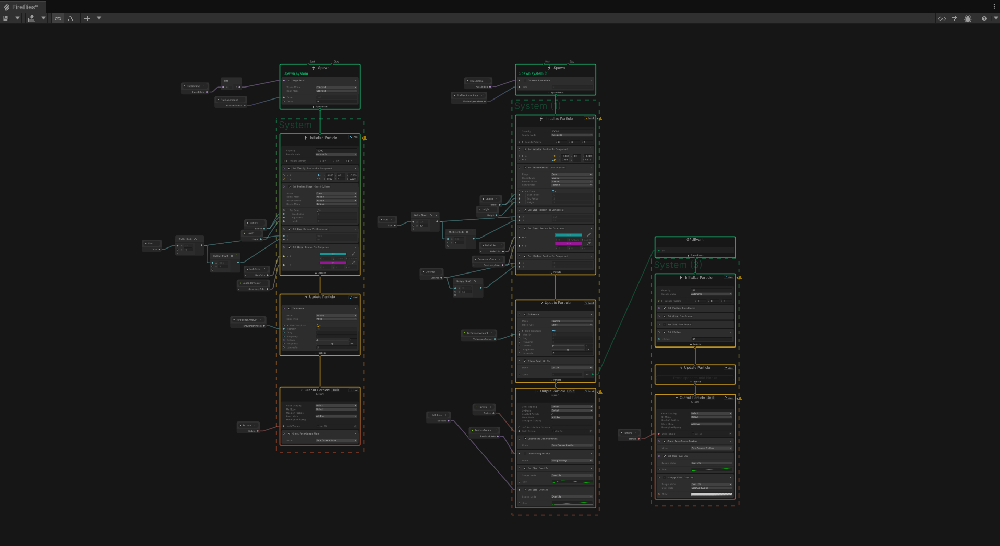
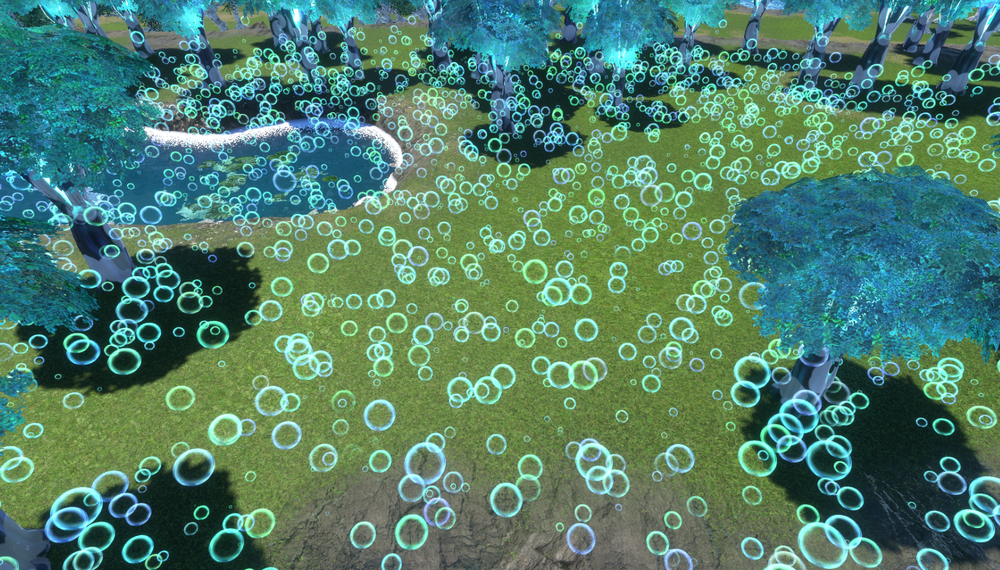
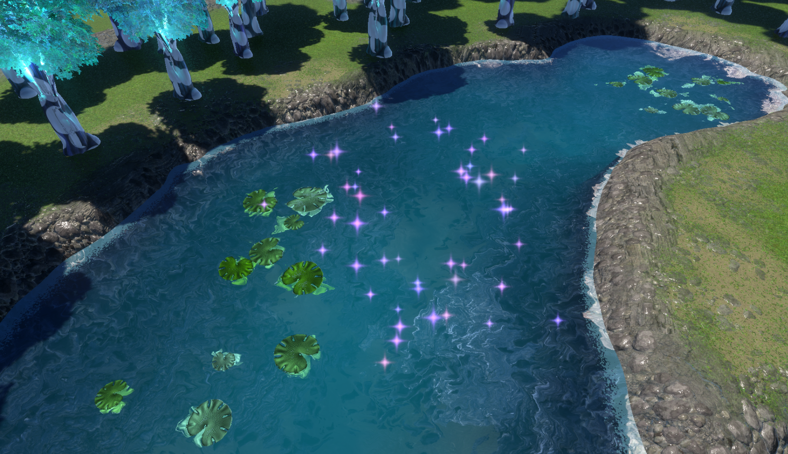
TECHNICAL BREAKDOWN
- Floating particles permanent or with lifetime and pop animation.
- It allows full customization of color, size and lifetime.
- Particles textures design can be customized.
EXPOSED PARAMETERS
05
Explosion
VFX | ANIMATED
VFX GRAPH
+
Random Explosion
Random component explosion allowing different animations for each one of the same kind. It allows full customization of particles and trails and the adjustment of multiple parameters to give it different variations.


TECHNICAL BREAKDOWN
- Multiple components with custom random parameters for each one.
- Explosion burst, fire, sparks, spark trails, smoke and shockwave.
- Random values for each component.
EXPOSED PARAMETERS
06
Rain
VFX | ENVIRONMENT
VFX GRAPH
+
Rain and meteors
Rain particles with impact particles suitable with different type of material physics.
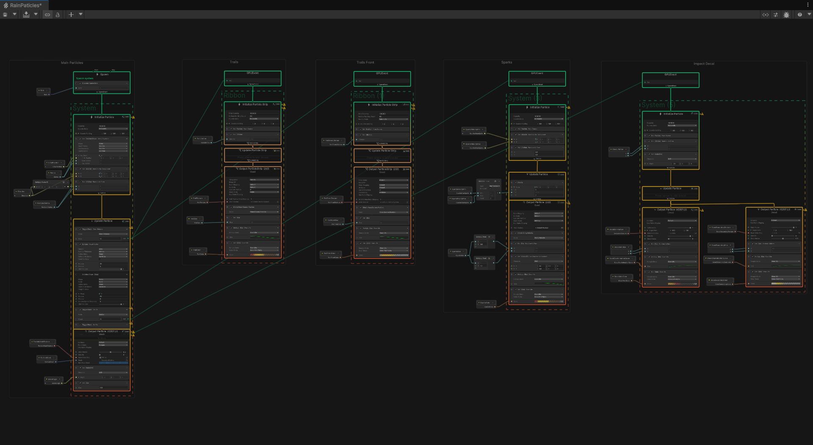
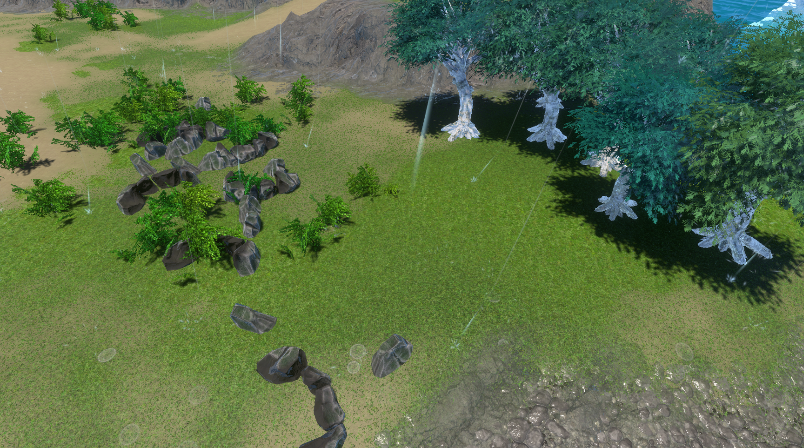
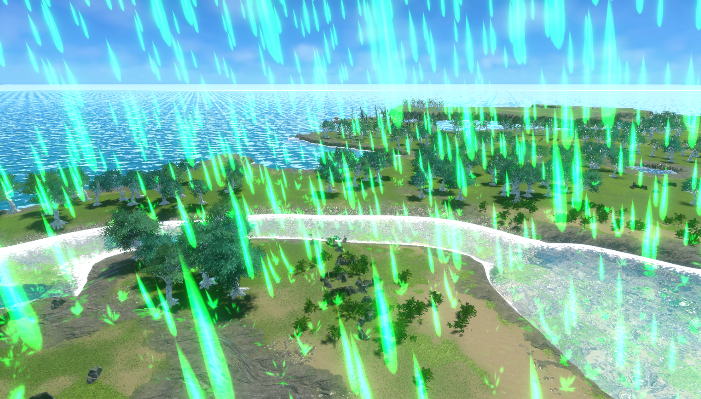
TECHNICAL BREAKDOWN
- Rain simulation with area size and density control.
- Customizable speed, color, particle and impact effect.
- Variable inclination to match the wind speed.
- Trails collission with colliders with sparks and decal generation.